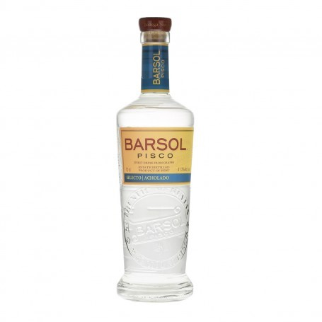
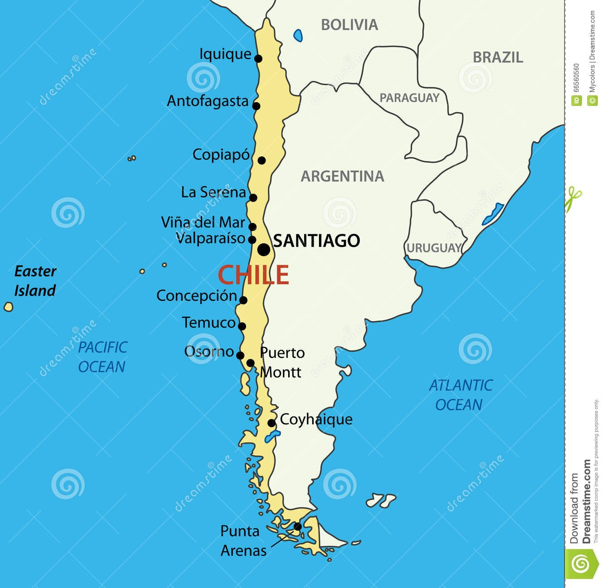

Quiero un hot dog con aguacates.... Czyli trochę o Chile

2. Walutą Chile jest peso.
3. Chile jest 2 razy większe od Polski
4. Główną religią jest Katolicyzm (70%).
5. Średnia długość życia w tym kraju to 78,7 lata (kobiety – 81,7 lat i mężczyźni – 75,5 lat)
6. Średni wiek osób zamieszkujących ten kraj to 33.7 lat.
7. Najwyższym budynkiem w Chile jest Gran Torre Santiago w Santiago mający 300 metrów wysokości (62 piętra). Wybudowany został w 2012 roku. Jest to jednocześnie najwyższy budynek w Ameryce Południowej
INFORMATYKA
8. Do Internetu ma dostęp ok. 79% społeczeństwa.
9. Średnia prędkość internetu stacjonarnego wynosi 5,7 Mb/s, a maksymalna 42 Mb/s.
10. Krajową domeną najwyższego poziomu jest .cl. Istnieje ponad 395 050 stron internetowych z takim rozszerzeniem.
11. Najpopularniejszymi stronami z rozszerzeniem .cl są: google.cl, mercadolibre.cl i lik.cl.
JEDZENIE & ZDROWIE
12. W Chile do hot doga daje się bułkę, parówkę, majonez i awokado.
13. Merkén to specjalna chilijska aromatyczna przyprawa z suszonych, wędzonych ostrych papryczek chili.
14. Przebywając na imprezie możesz zauważyć pozycję "Trzęsienie ziemi" w menu. To specjalny koktajl przygotowywany z wina, gorzkiej wódki fernet oraz z dodatkiem lodów ananasowych
15. Narodowym alkoholem jest pisco (brandy).
16. Kury z gatunku Araucana pochodzące z Chile znoszą jajka koloru niebieskiego.
17. W kraju tym dorosła osoba pali średnio 72 papierosów miesięcznie
18. 29 % dorosłych osób mieszkających w tym kraju ma nadwagę
19. Najbardziej zabójczą chorobą w tym kraju jest niewydolność układu krążenia.
20. Najpopularniejszym sportem jest tenis.

KULTURA & ZWYCZAJE21. 34% Chilijczyków mieszka w stolicy - Santiago de Chile. Dla porównania w Warszawie mieszka 5-6% Polaków.
22. Santiago de Chile to również najstarsze miasto w kraju
23. Tydzień pracy wynosi 45 godzin.
24. W kraju tym kobiety i mężczyźni mogą brać ślub w wieku 18 lat.
25. Bohaterem narodowym Chile jest Ignacy Domeyko, polski uczony i inżynier, twórca linii kolejowej w Andach.
26. Dwóch obywateli Chile otrzymało nagrodę Nobla.
27. Najstarsze mumie na świecie znajdują się... nie, nie w Egipcie, a w Chile! A dokładniej w regionie Arica. Badania naukowe wykazały, iż niektóre szczątki pochodzą z 5000-2000 r. p.n.e. i mogą mieć nawet siedem tysięcy lat.
28. Znajduje się tu największy basen, którego wielkość jest równa 20 basenom olimpijskim. Bez przygotowania nie da się go przepłynąć.
29. W chilijskich nieruchomościach nie istnieje pojęcie piętra. Parter jest od razu numerem 1.

30. W Chile znajdują się cztery strefy klimatyczne (w Polsce mamy jedną).
31. Znajdują się tam 30 parki narodowe.
32. Najniższa temperatura wynosiła -37 °C; została zmierzona w Coyhaique Alto.
33. Najwyższa temperatura wynosiła 41,6 °C; została zmierzona w Los Ángeles.
34. W tym kraju znajdziemy aż 4 000km różnych plaż – od kamienistych i ciepłych, po zimne piaskowe.
35. W Chile 21% powierzchni kraju zajmują grunty rolne.
36. 22% powierzchni kraju porastają lasy.
37. W Chile spada mniej niż 0,2 mm deszczu rocznie. Jest to najniższy opad na świecie.
38. Jedno z najsuchszych miejsc na świecie znajduje się właśnie w Chile. W mieście Arica leżącym w północnej części kraju przez 14 lat i 5 miesięcy nie odnotowano opadów deszczu.
39. Na terytorium tego państwa znajduje się ponad 2 000, a około 500 z nich jest nadal aktywnych.
40. Ten kraj jest trzecim największym producentem miedzi na świecie
41. Chile posiada ponad 300 bezchmurnych nocy w roku. Z tego powodu przylgnęła do niego łatka kraju z najczystszym niebem na świecie. To raj dla astronomów!
42. To do tego kraju należy tak popularna Wyspa Wielkanocna z kolosalnymi moai. Jest to też najbardziej oddalonych innych lądów zamieszkaną wyspą na świecie
43. Najsilniejsze trzesienie ziemii niestety nawiedziło właśnie Chile. Stało się to 22 maja 1960 roku o 15:11 czasu lokalnego. Jego magnituda wyniosła aż 9.5, a konsekwencją tak silnego wstrząsu było tsunami.

EDUKACJA44. Średni poziom IQ wynosi 90
45. Początek edukacji rozpoczyna się w wieku 6 lat.
46. Obowiązkowa nauka trwa 12 lat.
47. W kraju tym jest 2,7% osób powyżej 15 roku życia, które nie potrafią czytać, ani pisać.
MOTORYZACJA
48. Dopuszczalna zawartość alkoholu we krwi osoby prowadzącej samochód wynosi 0,3 promila
49. W stolicy znajduje się linia metra o długości 103 km ( 108 stacji). Otwarta została w 1975 roku. Rocznie korzysta z niej około 667 milionów osób.
A wy piliście kiedyś pisco? A może byliście na szczycie Gran Torre Santiago w Santiago? Koniecznie mi o tym opowiedzcie! Miłego dnia!